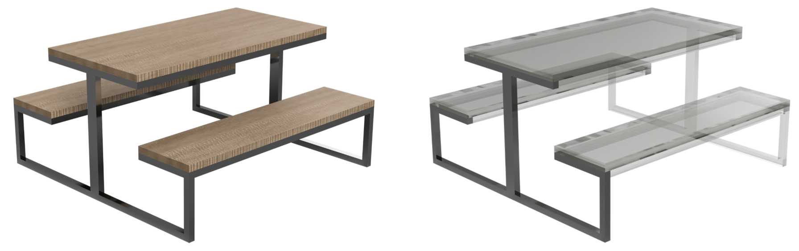

Task 1
Similar to the training task, we will take a CAD model and focus on making a parametric specification for a specific part of the model. For this task, we will use a 3D model of a picnic bench. More specifically, we will focus on the side leg of the picnic bench, as shown below.
Task
For this task, we will focus on a partial model of the picnic bench consisting of only the side leg. We will start with a partially constrained design consisting of 1 sketch and 1 extrusion as illustrated below.
- When the material thickness resized, it should remain uniform across the entire leg. The centre beam should always be twice this thickness. You can test this by varying the thickness as shown below.
- As an extension to task (1), the depth of the material of the leg should also resize uniformly together with the rest of the material thickness. You can test this using the same procedure as in (1).
- When the width of the bench resizes, the width of the seats should remain constant, but the table should widen so that its edges are always aligned with the benches. You can test this by changing the width of the bench as shown below.
- When the height of the picnic bench resizes, the height of both benches should be the same. As you can see, the height of the right bench is updated as when the total height varies, and the left bench should follow this change. You can test this by changing the height of the bench as shown below.